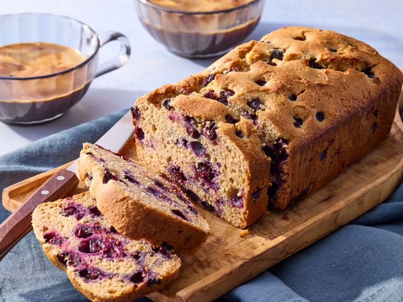

Cottage Cheese Blueberry Breakfast Cake
This cottage cheese blueberry breakfast cake is a lemony loaf cake studded with a full pint of fresh blueberries.
It's a perfect not-too-sweet breakfast or snack cake.

Ingredients
- 3/4 cup all-purpose flour plus 1 tablespoon for dusting
- 3/4 cup whole wheat flour
- 2 teaspoons baking powder
- 1/2 teaspoon salt
- 3/4 cup cottage cheese
- 3/4 cup honey
- 6 tablespoons coconut oil, melted, or neutral oil of choice
- 1 tablespoon lemon zest
- 3 tablespoons lemon juice
- 1 tablespoon vanilla extract
- 2 large eggs, lightly beaten
- 2 cups fresh blueberries
Directions
Return Home